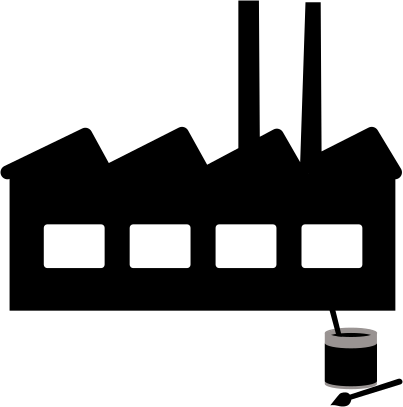
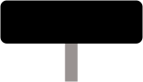
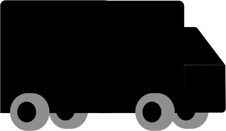
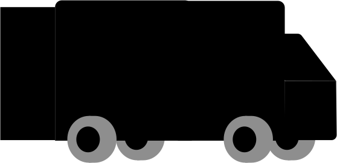
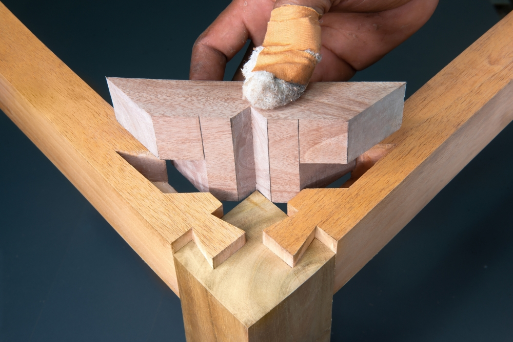

Aller au contenu
1. Des éco-solutions à chaque étape du cycle de vie
Imaginons l'entreprise Bon Pied Bon Cycle qui fabrique des vélos cargo. Elle souhaite réduire les impacts environnementaux de ses produits tout en répondant aux besoins de ses clients.
Par où commencer ? Faut-il choisir d’autres matériaux, modifier la fabrication, optimiser le transport, faciliter les réparations ou améliorer le recyclage ?
En réalité, les possibilités d’action existent à toutes les étapes du cycle de vie ! Explorons les principales éco-solutions à travers quatre étapes : la production, la distribution, l’utilisation et la fin de vie du vélo cargo.
c’est parti !
Clique sur les différentes parties du vélo et découvre comment les choix de conception peuvent contribuer à réduire ses impacts environnementaux.




fais évoluer le vélo tout au long de sa vie :
la fabrication
le transport
l’usage
la fin de vie
conclusion
Au travers de l’exemple du vélo cargo, on comprend que l’éco-conception ne se concentre pas uniquement sur la phase de production du vélo (incluant le choix des matières, le lieu et le type d’énergie pour produire et assembler), mais s’applique également à l’ensemble des étapes du cycle de vie du vélo : son usage, sa maintenance jusqu’à sa fin de vie.
Cette éco-conception sollicite un ensemble de parties prenantes et d’acteurs clés, qui vont permettre de déployer des éco-solutions pertinentes par rapport aux enjeux de la filière !
mascotte
Tu n’as pas encore tout découvert !
continuer
mascotte
Clique sur les différents éléments du dessin pour découvrir des proposition de choix de conception qui peuvent contribuer à réduire les impacts environnementaux !
c’est compris
à retenir
Réduire le volume transporté et mieux organiser la logistique peut être aussi important que choisir un autre matériau d’emballage.
c’est compris !
à retenir
Un produit bien conçu ne suffit pas toujours : sa maintenance, sa réparabilité et les pratiques d’utilisation influencent aussi ses impacts réels.
c’est compris !
à retenir
Le recyclage n’est pas la seule solution. Préserver la fonction du produit, le réparer et le réemployer sont également des leviers à étudier.
c’est compris !
Choisir les matériaux avec soin
Tous les matériaux n’ont pas les mêmes impacts. Leur production peut mobiliser des quantités différentes d’énergie et de ressources, émettre des gaz à effet de serre ou exercer d’autres pressions sur l’environnement.
L’éco-conception consiste à comparer les matériaux en tenant compte de leurs propriétés, de leur masse, de leur origine et de leur transformation, mais aussi des performances attendues du vélo.
On parle beaucoup de CO₂ ici… mais n’oublie pas : l’éco-conception, c’est aussi l’eau, la toxicité, l’utilisation des ressources minérales et fossiles… Ne mets pas tous tes œufs dans le même panier carbone !
Comparaison de matériaux pour le cadre
matériau empreinte carbone / kg résistance mécanique / volume de matériaux Coût € / kg
Acier (produit en UE) faible élevée faible Aluminium (produit en UE) moyenne moyenne moyen Aluminium (produit en Chine) élevée moyenne moyen Polyéthylène PE (UE) faible faible moyen
source : BAFU, 2025
esu-services.ch Acteurs associés : bureau d’études, fournisseurs de matières premières.
Faciliter l’assemblage et le démontage
Vis, jonctions, soudures : le choix des fixations influence la facilité avec laquelle un vélo peut être assemblé, entretenu, réparé ou démonté. Des assemblages démontables, des pièces standardisées et un accès facile aux composants peuvent simplifier ces opérations.
exemple
Une fixation réversible (vis, clips) se défait ; un collage est définitif. L’assemblage traditionnel japonais kigumi (木組み) emboîte les pièces de bois sans clou ni colle : on peut le démonter et le réparer.

source de l’image
voir un exemple : le kigumi
Acteurs associés : designers produits, ingénieurs mécaniques.
Réduire les impacts de la fabrication
La fabrication consomme de l’énergie et des matières premières. Elle peut aussi générer des rebuts et des émissions dans l’air, l’eau ou les sols.
Plusieurs leviers sont possibles : améliorer le rendement des procédés, limiter les pertes de matière, réduire les consommations d’énergie et prévenir les pollutions.
Souder le cadre, mouler les pièces plastiques, faire tourner les machines : tout cela consomme de l’énergie, d’origine thermique (comme le gaz) ou électrique. Or un kWh d’électricité n’a pas le même impact selon sa source : produit à partir de charbon, il émet environ 75 fois plus de gaz à effet de serre qu’un kWh éolien.
Le choix de l’énergie qui alimente l’atelier est donc un levier direct sur l’empreinte carbone du vélo.
Émissions de gaz à effet de serre selon la source d’électricité
Source d’énergie g CO₂ éq / kWh
Charbon ~820 Fioul ~730 Gaz naturel ~490 Solaire photovoltaïque ~45 à 48 Hydraulique ~24 Nucléaire ~12 Éolien (terrestre / en mer) ~11 à 12
source : GIEC (AR5), valeurs médianes en ACV,
orki.green
comparer les sources d’électricité
Acteurs associés : responsable production de l’usine, fournisseur d’énergie.
Choisir le lieu de production
Le pays où se trouve l’atelier compte aussi : chaque pays a son propre mix électrique (ce qu’il produit, importe et exporte chaque année). Produire son vélo ou ses matériaux en France ou en Pologne n’aura pas du tout la même empreinte environnementale !
Regarde la France : très peu de CO₂, mais plus de rayonnements ionisants, à cause du nucléaire. C’est l’intérêt d’une approche multicritère !
Impacts d’un kWh d’électricité selon le pays
Pays g CO₂ éq / kWh Acidification (mol H+ éq) Rayonnements ionisants (kBq U235 éq)
Chine 717 6,24 × 10⁻⁴ 6,98 × 10⁻² France 73,1 2,22 × 10⁻⁴ 1,12 Inde 968 6,62 × 10⁻³ 5,60 × 10⁻² Pologne 728 1,41 × 10⁻³ 3,34 × 10⁻² États-Unis 422 1,03 × 10⁻³ 2,82 × 10⁻¹
source : BAFU, 2025,
esu-services.ch
comparer les pays de production
Acteurs associés : responsable production de l’usine, fournisseur d’énergie.
Concevoir des emballages adaptés
Un emballage doit protéger le vélo, mais il peut aussi être conçu pour utiliser moins de matière, être réutilisé et prendre moins de place pendant le transport.
Optimiser la forme des emballages permet en plus de mieux remplir les camions et les conteneurs, et donc de réduire le nombre de trajets.
Acteurs associés : responsable logistique / supply chain, fournisseur d’emballages, acheteur.
Optimiser le transport
Les impacts du transport dépendent du mode utilisé, de la distance parcourue, du taux de chargement et des caractéristiques des véhicules.
Regrouper les livraisons, éviter les trajets à vide et choisir un mode de transport moins impactant quand c’est possible : autant de leviers à étudier.
Le train et le fluvial sont moins carbonés, mais pas toujours possibles partout !
Le g CO₂ éq / t.km correspond aux émissions de gaz à effet de serre pour transporter une tonne de marchandise sur un kilomètre : plus il est élevé, plus le mode de transport est carboné.
Émissions par mode de transport
Mode de transport Région g CO₂ éq / t.km
Route (camion 32 t) Europe ~90 Voie fluviale Monde ~20 Maritime Monde ~25 Aérien Monde ~516 à 608 Train Europe ~20
source : GLEC Framework 2025, Global Logistics Emissions Council
comparer les modes de transport
Acteurs associés : responsable logistique / supply chain, transporteur, affréteur.
Réduire les consommations à l’usage
Pour un vélo à assistance électrique, la batterie et l’électricité consommée pendant les recharges contribuent aux impacts de la phase d’utilisation.
Une meilleure efficacité énergétique peut réduire la quantité d’électricité nécessaire pour un même service rendu.
L’efficacité énergétique des voitures a énormément progressé en 80 ans : elles consomment beaucoup moins de carburant par cm³ de cylindrée, par km/h de vitesse maximale ou par cheval de puissance.
Et pourtant, leur consommation réelle (en litres aux 100 km) a augmenté, car leur taille, leur puissance et leur confort ont fortement augmenté aussi. Le gain d’efficacité n’a pas servi à économiser de l’énergie : il a été transféré vers plus de performance.
exemple
La 2CV (1959, 375 cm³) consommait environ 4 L/100 km. La C3 (2008, 1 400 cm³) consomme 5 à 6 L/100 km, malgré des décennies de progrès technique.
source : J.-M. Jancovici, cours aux Mines, 2019,
youtube.com
plus efficace ne veut pas dire plus sobre
Acteurs associés : ingénieur motorisation, designer produit, fabricant de batterie (sous-traitant technique).
Allonger la durée de vie
Augmenter la durée de vie du produit passe par la réparation, la maintenance, la réutilisation, le reconditionnement et le remanufacturing, tout en prévenant l’obsolescence technique et esthétique.
On va donc concevoir le vélo pour qu’il soit réparable avec des outils standards du commerce : limiter les jointures difficiles à défaire (soudures, colle), favoriser les vis, faciliter le nettoyage…
Réutilisation
prolonger la durée de vie du produit en le cédant à un autre utilisateur (seconde main, don, consigne), sans transformation majeure.
Reconditionnement
remettre à neuf un produit usagé pour lui donner une seconde vie, avec des performances proches du neuf (nettoyage, remplacement de pièces, mises à jour).
Remanufacturing
démonter un produit en fin de vie pour réutiliser ses composants dans un nouveau produit de même fonction, par des procédés industriels : les performances sont identiques à celles de composants neufs.
réutiliser, reconditionner, remanufacturer : les définitions
Acteurs associés : designer produit, réparateur, réseau de reconditionnement.
Aider à entretenir et réparer
Une notice claire et accessible, pour l’entretien du vélo comme pour la gestion de la batterie, permet à l’utilisateur de réparer et d’entretenir facilement son vélo, et prolonge ainsi sa durée de vie.
voir une page de notice
Faciliter le démontage et le recyclage
La fin de vie se prépare dès la conception. Limiter les assemblages difficiles à séparer et faciliter l’identification des matériaux peut simplifier le tri et leur orientation vers les filières adaptées.
Tous les plastiques n’ont pas de filière de recyclage. En France, seuls les thermoplastiques comme le PE, le PP et le PET sont concernés.
source : ADEME, Bilan national du recyclage 2024,
infos.ademe.fr En France, le réemploi et le reconditionnement sont prioritaires sur le recyclage : le réseau associatif Heureux Cyclage a réemployé 71 % des vélos collectés en 2018, et 158 000 vélos d’occasion ont été vendus par des professionnels en 2024.
Le recyclage n’intervient qu’en dernier recours. Il est encadré par la filière REP Articles de sport et de loisirs (loi AGEC), pilotée par l’éco-organisme Ecologic : en 2024, 6 000 tonnes de vélos ont été collectées et recyclées (acier, aluminium, caoutchouc, plastiques), sur un gisement estimé à 46 000 tonnes.
sources : ADEME, Impact socio-économique des usages du vélo en France librairie.ademe.fr ; librairie.ademe.fr ;
réemployer avant de recycler
Acteurs associés : designer produit (choix des matériaux et de l’assemblage), bureau d’études, éco-organisme Ecologic, réseau associatif Heureux Cyclage.
Prévoir le devenir de la batterie
La filière REP encadre spécifiquement la collecte, le tri et le recyclage des batteries. En France, les éco-organismes agréés pour les batteries sont Corepile et Batribox , agréés pour toutes les catégories de batteries depuis 2025.
REP (Responsabilité Élargie du Producteur)
dispositif réglementaire qui impose aux producteurs, importateurs ou distributeurs d’un produit de prendre en charge sa fin de vie, afin de réduire son impact environnemental. Cette responsabilité couvre la collecte, le tri, le recyclage ou l’élimination des déchets générés par leurs produits, ainsi que le financement de ces opérations.
Éco-organisme
structure privée à but non lucratif (souvent une association ou une société), agréée par les pouvoirs publics pour organiser et financer la gestion de la fin de vie des produits dans le cadre d’une filière REP.
REP et éco-organisme : les définitions
Acteurs associés : éco-organismes (Corepile, Batribox), distributeurs et réparateurs, sociétés de transport spécialisées, centres de tri, industriels du recyclage.
Favoriser le réemploi et le partage
Une autre approche pour réduire l’impact en fin de vie consiste à intensifier l’usage du vélo par plusieurs personnes, via la mutualisation, le partage ou la dématérialisation du service (location plutôt qu’achat).
Grätzlrad (Vienne, Autriche)
des vélos cargo mis gratuitement à disposition d’un quartier via une plateforme de réservation : un même vélo remplace les besoins occasionnels de plusieurs dizaines de foyers.
LastenVelo (Fribourg, Allemagne)
une flotte de vélos cargo partagés, qui réduit le nombre de vélos en circulation.
Véligo Location (France)
la location avec maintenance et assistance plutôt que l’achat, qui allonge la durée de vie grâce à une maintenance centralisée.
Cargoroo
des vélos cargo en libre-service via une application, pour optimiser leur taux d’utilisation.
sources : ADEME, Impact socio-économique des usages du vélo en France (2026) ; ADEME, Étude préalable filière REP Articles de sport et de loisirs (2020)
des exemples de partage
Acteurs associés : collectivités locales, plateformes de mobilité partagée, opérateurs de location, professionnels du reconditionnement (Upway, Décathlon, Loewi, Alltricks).